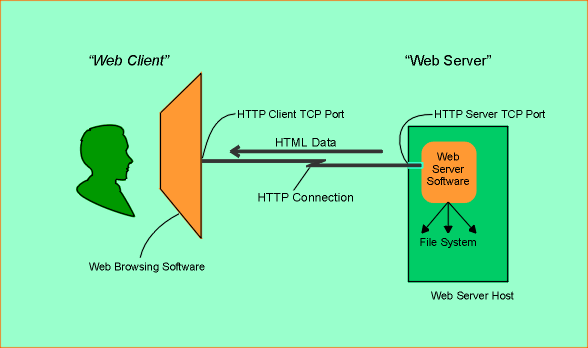

Programación de Aplicaciones Telemáticas
Tema 0: Introduccion a la asignatura
Agenda
- Objetivos
- Estructura de la asignatura
- World Wide Web
- Frontend
- Backend
- Servicios
- Referencias
Objetivos
- Dotar al alumno de los conocimientos suficientes para desarrollar aplicaciones telematicas.
- Enseñar sobre la aquitectura WWW y sus estándares
- Enseñar sobre desarrollo de aplicaciones Backend con Java
- Enseñar sobre desarrollo de aplicaciones Frontend con HTML, CSS & Javascript
Estructura de la asignatura
Primera parte:
- Introducción a la asignatura
- Introducción a Java en la Industria
- Protocolo HTTP
- Frontend: HTML/CSS/Javascript
- Frameworks de Backend: Spring Boot
Estructura de la asignatura
Segunda parte:
- Acceso a base de datos Relacionales
- Acceso a base de datos No Relacionales
- Programación funcional
- Event-driven
- Diseño de aplicaciones empresariales
- Frameworks de frontend: React
- Seguridad
World Wide Web
The World Wide Web (WWW) is an information system where documents and other web resources are identified by Uniform Resource Locators (URLs), which may be interlinked by hypertext, and are accessible over the Internet.
World Wide Web
The World Wide Web Consortium (W3C) is an international community work together to develop Web standards.

Frontend
- HTML: Estructura y contenido
- CSS: Formato
- Javascript: Interacción

Backend
The Spring Framework provides a comprehensive programming and configuration model for modern Java-based enterprise applications on any kind of deployment platform.

Servicios
Almacenamiento de datos
| Relational Databases | Non relational Databases |

|
|
| SQL | No-SQL |
Servicios
Messaging Brokers

Referencias
- https://www.w3.org/TR/?title=html
- https://www.w3.org/TR/?title=css
- https://www.ecma-international.org/publications/standards/Stnindex.htm
- https://javaee.github.io/servlet-spec/downloads/servlet-4.0/servlet-4_0_FINAL.pdf
- https://spring.io/projects/spring-boot
- https://www.enterpriseintegrationpatterns.com/patterns/messaging/
- https://www.postgresql.org/
- https://www.mongodb.com/